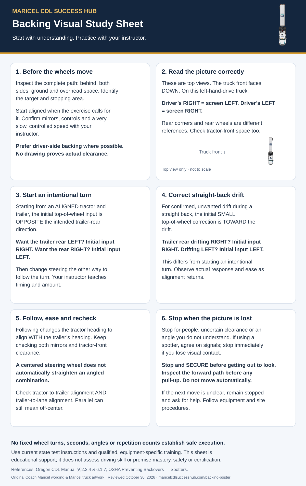

Coach Maricel’s Backing Visual Study Sheet
A beginner study sheet with Coach Maricel’s explanations and the existing Maricel truck illustrations. Reviewed October 30, 2026.
On a phone, open the full-size study sheet to pinch and zoom. Read the clarification above before using the poster.

Text study notes & learning references
1. Before the wheels move
Inspect the complete path: behind, both sides, ground and overhead space. Identify the target and stopping area.
Start aligned when the exercise calls for it. Confirm mirrors, controls and a very slow, controlled speed with your instructor.
Prefer driver-side backing where possible. No drawing proves actual clearance.
2. Read the picture correctly
These are top views. The truck front faces DOWN. On this left-hand-drive truck:
Driver’s RIGHT = screen LEFT. Driver’s LEFT = screen RIGHT.
Rear corners and rear wheels are different references. Check tractor-front space too.
3. Start an intentional turn
Starting from an ALIGNED tractor and trailer, the initial top-of-wheel input is OPPOSITE the intended trailer-rear direction.
Want the trailer rear LEFT? Initial input RIGHT. Want the rear RIGHT? Initial input LEFT.
Then change steering the other way to follow the turn. Your instructor teaches timing and amount.
4. Correct straight-back drift
For confirmed, unwanted drift during a straight back, the initial SMALL top-of-wheel correction is TOWARD the drift.
Trailer rear drifting RIGHT? Initial input RIGHT. Drifting LEFT? Initial input LEFT.
This differs from starting an intentional turn. Observe actual response and ease as alignment returns.
5. Follow, ease and recheck
Following changes the tractor heading to align WITH the trailer’s heading. Keep checking both mirrors and tractor-front clearance.
A centered steering wheel does not automatically straighten an angled combination.
Check tractor-to-trailer alignment AND trailer-to-lane alignment. Parallel can still mean off-center.
6. Stop when the picture is lost
Stop for uncertain clearance, a person entering the area, or loss of visual contact with your spotter. Agree on signals before moving.
Stop and SECURE before getting out to look. Inspect the forward path before any pull-up. Do not move automatically.
If the next move is unclear, remain stopped and ask for help. Follow equipment and site procedures.
Study the trailer’s response, use small inputs and check both mirrors. Inspect the intended path, including the sides and overhead space. When unsure, stop and secure the vehicle before getting out to check. Plan any repositioning after checking the space; do not move forward just because backing has become uncertain.
Use qualified instruction and your company’s procedures. No fixed repetition count proves readiness or replaces current state test instructions.
References: Oregon CDL manual §2.2.4; OSHA spotter guidance; Oregon DMV Commercial Driver Manual, section 6.1.7 — Backing with a Trailer. Disclaimer & Source Credits.